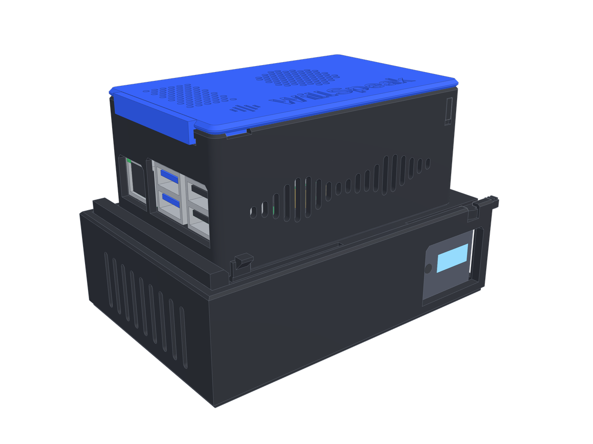
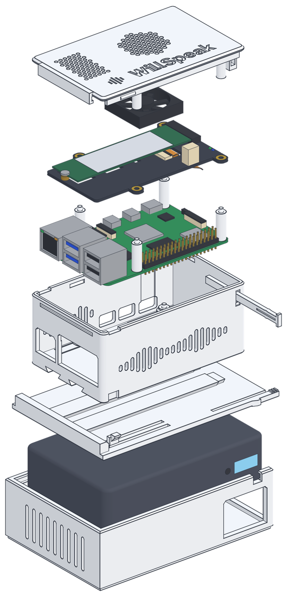
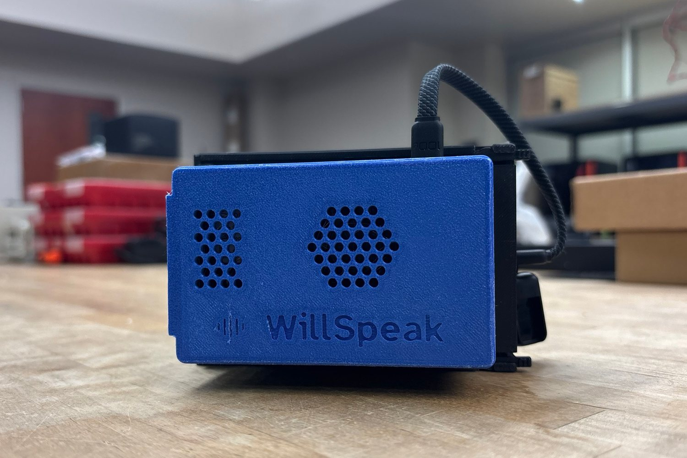
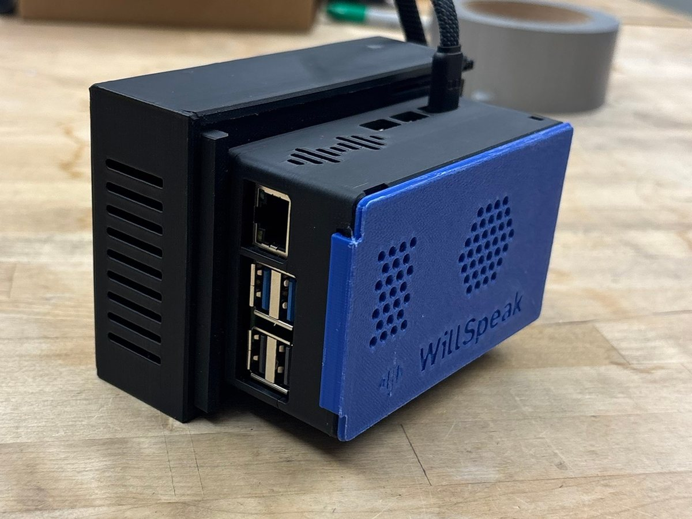

ENGR 1113 / Lipscomb University / Fall 2026
It listens, then says it clearly.

WillSpeak is a small box that hears a person with severe dysarthria and repeats their words in a clear voice. It works offline, and it needs no hands.
See the resultsJackson Coon · Poster (PDF)
In short
- The problem68.1%
of words come out wrong when a stock speech recogniser hears three speakers with severe dysarthria.
- What I builtFit to one voice
An open recogniser adapted to one speaker at a time, with a small language model, on a Raspberry Pi 5 in a 3D-printed case. No internet, no hands.
- The result28.8%
of the same 1,304 words wrong. Whole sentences right rise from 13.3% to 31.7%.
Results from my lab runs
Seven findings, from the starting point to the device. Every number is from a run I recorded on TORGO, a public corpus of dysarthric speech, and the models are tested only on sentences kept out of their training. Open a finding to see its chart.
- Stock model, the starting point
- My models and the device
Before any training, the stock recogniser gets 59.6% of words wrong on four severe speakers
Before any training, the stock recogniser got 59.6% of words wrong on 292 sentences from TORGO's four severe speakers (95% interval 55.2 to 63.8). That number set the first requirement: a model personalised to one voice.
Adapting it to the speaker more than halves the word errors
Word error rate
Wrong words out of 1,304, over all 513 held-out clips. Lower is better.
Stock model68.1%888 of 1,304 words wrong.Adapted32.7%427 of 1,304 words wrong.Adapted + language model28.8%376 of 1,304 words wrong. Single words are chosen with their own weights.Adapting the recogniser to the speaker does most of the work. The clips are 120 sentences and 393 single words.
The numbers
Model Wrong Of Rate Stock model 888 1,304 68.1% Adapted 427 1,304 32.7% Adapted + language model 376 1,304 28.8% Lab test 36, November 2026. TORGO speakers M01, M02 and M04.
A language model lifts whole sentences right from 24.2% to 31.7%
Whole sentences right
Share of 120 held-out sentences with every word right. Higher is better.
Stock model13.3%16 of 120 sentences. Parakeet-TDT 0.6B as downloaded.Adapted24.2%29 of 120 sentences. Pretrained on the other severe speakers, then a 1 M-parameter adapter per speaker.Adapted + language model31.7%38 of 120 sentences. Qwen2.5-0.5B chooses among nine decodes of each clip: 10 sentences gained, 1 lost.The language model adds 7.5 points, with a 95% interval of 2.5 to 12.5.
The numbers
Model Right Of Share Stock model 16 120 13.3% Adapted 29 120 24.2% Adapted + language model 38 120 31.7% Lab test 36, November 2026. TORGO speakers M01, M02 and M04.
Pretraining, then a small adapter, was the best training recipe
What each training choice was worth
Word error rate on the 425 words of the three speakers' test clips, mean of three training seeds. Lower is better.
Stock model76.0%323 of 425 words wrong.Adapter only46.0%195.3 words wrong. One added layer trained on the speaker's clips, the rest of the model frozen.Retrain whole blocks45.8%194.7 words wrong. Whole encoder blocks retrained on the speaker's clips.Pretrain, then whole blocks45.3%192.3 words wrong. Pretrained on the other severe speakers first.Pretrain, then adapter41.9%178.0 words wrong. The recipe the device uses.Pretraining on the other severe speakers and then fitting a small adapter to one speaker gave the lowest error, so that is the recipe I kept. These 166 test clips are a different, smaller set than the 513 clips above, so the percentages differ.
The numbers
Recipe Wrong of 425 Rate Stock model 323 76.0% Adapter only 195.3 46.0% Retrain whole blocks 194.7 45.8% Pretrain, then whole blocks 192.3 45.3% Pretrain, then adapter 178.0 41.9% Lab runs of October 2026. 166 test clips of M01, M02 and M04.
The adapter works best after block 8 of the encoder's 24
Where the adapter goes
Word error rate on the same 425 test words by the encoder block the adapter follows. Lower is better.
After block 841.0%174.3 words wrong, mean of three seeds.After block 1252.9%224.7 words wrong.After block 1655.2%234.7 words wrong.After block 2459.0%250.7 words wrong.The adapter is one added layer of about a million numbers. After block 8 of the encoder's 24 it works best; every later position I tried did worse.
The numbers
Adapter after Wrong of 425 Rate Block 8 174.3 41.0% Block 12 224.7 52.9% Block 16 234.7 55.2% Block 24 250.7 59.0% Lab test 34, October 2026.
The 8-bit copy that runs on the Pi costs 1 to 4 words in 425
The Pi runs an 8-bit copy of the model. On the adapted model the 8-bit copy cost 1 to 4 words out of 425 in the lab, so the small file is the one that ships.
The Pi 5 decodes a 3 second phrase in 0.40 s
Speed on the device
Seconds to decode a 3 second phrase. Lower is better.
Mini-PC, first choice1.54 s1.535 s on the mini-PC I started with.Pi 5, one thread0.62 s0.616 s, 0.21 of real time.Pi 5, two threads0.40 s0.396 s, 0.13 of real time.Pi 5, four threads0.37 s0.365 s, 0.12 of real time.The mini-PC was too slow, so the device moved to a Raspberry Pi 5, which is 3.9 times faster at two threads. These timings are the stock 8-bit model on an idle Pi.
The numbers
Computer Seconds Share of real time Mini-PC 1.535 0.51 Pi 5, one thread 0.616 0.21 Pi 5, two threads 0.396 0.13 Pi 5, four threads 0.365 0.12 Benchmark of 8 September 2026, Raspberry Pi 5 with 8 GB.
What testing changed
- The mini-PC took 1.5 s for a 3 s phrase.Moved to a Raspberry Pi 5: 0.40 s.
- My first fine-tune scored worse than the stock model (93.5% against 73.9% on one speaker).Froze the batch-norm statistics, which brought it back.
- A live test in a room picked up other voices.Added a gate that opens 12 dB under the speaker's own median level.
- The language model's sentence weights lost 10 to 31 of 393 single words.Gave single words their own chooser, which gains 4 to 10.
The device
A Raspberry Pi 5 with 8 GB of memory, an NVMe SSD, a fan and a 65 W, 20,000 mAh power bank, in a case I designed and 3D-printed. It goes together with no screws. A lavalier microphone at the collar is the sensor and a speaker is the output.

- Step
The battery
The power bank drops into the battery tray, held by sprung fingers.
- Step
The computer
The Pi sits on four pins in the case body; a printed spacer on each pin carries the SSD board.
- Step
The lid
The fan clips into the lid, the lid hooks on and swings shut, and the lid key slides in to lock it.
- Step
The rail
The case slides onto the rail plate until its latch clicks.
Printed parts are shown in the colours of the real print: black, with a blue lid. On screen the parts move straight up and down, and the lid key slides in from the side.
The printed prototype


CAD files: every printed part as STL and STEP
STL is for a slicer and STEP is for CAD. The parts print in one colour each at 0.2 mm layers with no supports.
- Case body1 copy
- Lid1 copy, printed face down
- Lid key1 copy
- Spacer4 copies, with a brim
- Rail plate1 copy
- Battery tray1 copy
- Whole assemblyall parts in place
How it works
On the device, a phrase passes through seven steps in three stages.
-
Stage 1
Hear
Pick the speaker's voice out of the room.
- Microphoneraw audio, auto-gain off
- Loudness gate12 dB under the speaker's median level
- Clean uptrims silence, skips duplicates
-
Stage 2
Understand
Turn the sound into words.
- Speech recognition8-bit Parakeet-TDT 0.6B on the Pi 5
- Language modelQwen2.5-0.5B picks the best fit
-
Stage 3
Speak
Say it, with no hands.
- Hands-free checkspeak it, stop it, or sleep
- Speakersays it in a clear voice
How the recogniser is trained
- Stock model. Parakeet-TDT 0.6B, an open recogniser with 618 million parameters.
- Pretrain. Fine-tune it on TORGO's other severe speakers, so it has heard severe dysarthria before it meets the speaker.
- Adapter. Freeze the model and fit one added layer of about a million parameters to the speaker's own clips.
- Export. Write an 8-bit file that the Pi 5 runs on its processor.
The training data and how it is split
TORGO has eight speakers with dysarthria reading words and sentences. The tests use its three severe speakers M01, M02 and M04, with 72 to 156 training clips each.
Other TORGO speakers read at least 98% of each severe speaker's prompts, so I split by prompt: 70% train, 10% development and 20% test, the same for every speaker. No test sentence is ever trained on.
Research and citations
Three sources shaped the project. The rest of the reading and the software are listed under them.
The three I leaned on
- Rudzicz, F., Namasivayam, A. K. & Wolff, T. (2012). The TORGO database of acoustic and articulatory speech from speakers with dysarthria. Language Resources and Evaluation 46(4), 523–541. TORGO databaseThe corpus every result on this page is measured on.
- Hui, M., Zhang, J. & Mohan, A. (2024). Enhancing AAC Software for Dysarthric Speakers in e-Health Settings: An Evaluation Using TORGO. arXiv:2411.00980Sets out how much TORGO's prompts overlap between speakers. It is the reason I test only on held-out sentences.
- Shor, J. et al. (2019). Personalizing ASR for Dysarthric and Accented Speech with Limited Data. Interspeech 2019. arXiv:1907.13511Personalising a recogniser with a small amount of one speaker's recordings: the idea this project rests on.
Eight more sources
- Green, J. R. et al. (2021). Automatic Speech Recognition of Disordered Speech: Personalized Models Outperforming Human Listeners on Short Phrases. Interspeech 2021.Personalised models for disordered speech on short phrases.
- Speech Accessibility Project Challenge, Interspeech 2025. arXiv:2507.22047How the strongest current systems are built.
- Personalised models for severe speakers by amount of data. arXiv:2110.04612How results grow with the amount of a speaker's own data.
- Whisper-medium fine-tuned on Speech Accessibility Project data, tested on TORGO. arXiv:2501.14994A published point of comparison on TORGO.
- Commercial speech recognition and multimodal language models on severe dysarthric speech. arXiv:2512.17474How off-the-shelf systems do on severe speech.
- Disordered speech added to the pretraining of Google's USM. arXiv:2412.19315On improving the base model itself with disordered speech.
- Zero-shot voice cloning of TORGO speakers for training data. arXiv:2508.05102On using cloned speech as training data for severe speakers.
- Speech Accessibility Project, University of Illinois. Data accessA much larger collection of disordered speech, available under a data use agreement.
Models and software
- NVIDIA. Parakeet-TDT-0.6B-v2, speech recognition model. Model page
- Qwen team. Qwen2.5-0.5B, language model. Model page
- NVIDIA NeMo, the toolkit the model is trained with. Repository
- sherpa-onnx, the runtime that runs the model on the Pi. Repository
- three.js, which draws the 3D model on this page. threejs.org
Tool use: Claude (Anthropic), sourcing research from eastern countries, general assistant and tutor.
Next05 / The codeThe code
The application, the training and evaluation scripts and their tests are in the WillSpeak repository on GitHub. Recordings, model weights and run logs are left out.
Where to start reading
scripts/asr/train.pyFine-tunes Parakeet from the train and development splits. It never opens the test split.scripts/asr/block_adapter.pyThe adapter: one added layer after an encoder block.scripts/corpus/torgo_manifest.pyScans TORGO and writes the prompt-disjoint splits.
Six more files
scripts/asr/lm_report.pyChooses among a clip's candidate sentences with the language model.scripts/asr/ci.pyPaired bootstrap intervals for the word error rates.scripts/asr/export.pyExports a trained model to the files the Pi runs.src/willspeak/handsfree.pyThe hands-free rules: speak, stop, sleep and wake.src/willspeak/server.pyThe server that records, transcribes and replies on the device.tests/Unit and integration tests for the code above.